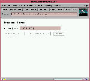
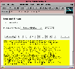

One of the minor miracles of the World Wide Web is that it makes client/server network programming easy. With the Common Gateway Interface (CGI), anyone can become a network programmer, creating dynamic Web pages, front-ends for databases, and even complex intranet applications with ease. If you're like many Web programmers, you started out by writing CGI scripts in Perl. With its powerful text-processing facilities, forgiving syntax, and tool-oriented design, Perl lends itself to the small programs for which CGI was designed.
Unfortunately the love affair between Perl and CGI doesn't last forever. As your scripts get larger and your server more heavily loaded, you inevitably run into the performance wall. A thousand line Perl CGI script that runs fine on a lightly loaded Web site becomes unacceptably slow when it increases to 10,000 lines and the hit rate triples. You may have tried switching to a different programming language and been disappointed. Because the main bottleneck in the CGI protocol is the need to relaunch the script every time it's requested, even compiled C won't give you the performance boost you expect.
If your applications go beyond simple dynamic pages, you might have run into the limitations of the CGI protocol itself. Many interesting things happen deep inside Web servers, such as the smart remapping of URLs, access control and authentication, and the assignment of MIME types to documents. The CGI protocol doesn't give you access to these internals. You can neither find out what's going on nor intervene in any meaningful way.
To go beyond simple CGI scripting, you must use some protocol that doesn't rely on launching and relaunching an external program each time a script runs. Alternatives include NSAPI on Netscape servers, ISAPI on Windows servers, Java servlets, server-side includes, Active Server Pages (ASP), FastCGI, Dynamic HTML, ActiveX, JavaScript, and Java applets.
Sadly, choosing among these technologies is a no-win situation. Some choices lock you into a server platform for life. Others limit the browsers you can support. Many offer proprietary solutions that aren't available in other vendors' products. Nearly all of them require you to throw out your existing investment in Perl CGI scripts and reimplement everything from scratch.
The Apache server offers you a way out. Apache is a freely distributed, full-featured Web server that runs on UNIX and Windows NT systems. Derived from the popular NCSA httpd server, Apache dominates the Web; nearly half of the servers reachable from the Internet are Apache. Like its commercial cousins from Microsoft and Netscape, Apache has a programmer's API, allowing you to extend the server with modules of your own design. Apache modules can behave like CGI scripts, (creating interactive pages on the fly, or they can make fundamental changes in the operation of the server, such as logging Web accesses to a relational database or replacing standard HTTP authentication with a system integrated with Kerberos, DCE, or one-time passwords. Regardless of whether they're simple or complex, Apache modules perform much better than even the fastest conventional CGI scripts.
The best thing about Apache modules, however, is the existence of mod_perl. mod_perl is a fully-functional Perl interpreter embedded directly in Apache. With mod_perl you simply take your existing Perl CGI scripts and plug them in to the server, usually without any source code changes whatsoever. Your scripts run exactly as before, but many times faster - nearly as fast as fetching static HTML pages in many cases. Better yet, mod_perl offers a Perl interface to the Apache API, allowing you full access to Apache internals. Instead of writing Perl scripts, you can write Perl modules that control every aspect of the Apache server's operations. Move your existing Perl scripts over to mod_perl to get an immediate performance boost. As you need to, you can add new features to your scripts that take advantage of the Apache API.
This article will introduce you to mod_perl and show how its unique features can speed up your Web site.
To install handlers for any of these phases, you create a Perl .pm file and add the appropriate mod_perl directive (shown in parentheses) to the server's httpd.conf or .htaccess file. You use a different directive for each phase. For example, you install a log phase handler with the directive PerlLogHandler and a content phase handler with the directive PerlHandler (since the content handler is the one installed most frequently, it has the most generic name). So to install logging and URI translation handlers for all URI's below the virtual directory /magic, you could enter something like this in access.conf:
<Location /magic>
PerlTransHandler Apache::Magic
PerlLogHandler Apache::MyLog
</Location>
By convention, mod_perl modules are all members of the Apache:: namespace. This doesn't mean that they inherit from Apache.pm, and you needn't even follow the convention if you don't care to.
Because Apache ordinarily associates content handlers with real files on the basis of their MIME types, you need a slightly different incantation when installing a content handler:
<Location /virtual>
SetHandler perl-script
PerlHandler Apache::Virtual
</Location>
All URI's that begin with /virtual will now be passed through the module Apache::Virtual, regardless of whether or not they correspond to physical files on the server. The module will be passed the remainder of the URI to do with what it chooses. You can turn the remaining components of the URI path into a database query, treat them as verbs in a command language, or just plain ignore them.
Content handlers are straightforward. A minimal handler looks like this:
package Apache::Simple;
use Apache::Constants qw(OK DECLINED);
sub handler {
my $r = shift;
my $host = $r->get_remote_host;
$r->content_type('text/plain');
$r->send_http_header;
$r->print("Good morning, $host!");
return OK;
}
1;
We first declare a unique package name. This is very important: Because all mod_perl modules live in the same Perl process, namespace conflicts became a very real possibility. Next we import two constants, OK and DECLINED, from the Apache::Constants module, a standard part of the mod_perl distribution. Lastly, we declare a subroutine named handler(). By default, mod_perl looks for a subroutine by this name when processing a handler directive.
When handler() is called, it is passed an Apache request object as its single argument. This object contains information about the current request, and serves as an interface to the Apache server's functionality. You can use it to modify the request, to send information to the browser, and to request services from Apache such as filename translation. In this script, we first have the request object retrieve the DNS name of the remote host. Then we create the response, first setting the HTTP header to MIME type text/plain with a call to content_type(), and then sending the HTTP header with send_http_header(). We then create the content by making a call to the request's print() method and send a friendly message to the browser. Finally, we return to Apache a result code of OK, indicating that we handled the request. We could also return DECLINED, indicating that Apache should try a different handler.
Here's how a content handler can redirect the browser to a different URI using an HTTP REDIRECT instruction:
package Apache::Redirect;
use Apache::Constants qw(OK DECLINED REDIRECT);
sub handler {
my $r = shift;
my $remote_url ='http://www.somewhere.else/go/away.html';
$r->header_out(Location=>$remote_url);
return REDIRECT;
}
1;
In this case, we call the request object's header_out() method to set the outgoing HTTP Location header we are redirecting to. There's no need to invoke send_http_header() or send a document body. Apache takes care of this for us when the return code is something other than DECLINED or OK. In this case, returning REDIRECT makes Apache generate a 302 Moved Temporarily status code and send the HTTP headers. Normally there's no need to send a document body because most clients will follow the Location header. However, to be HTTP-compliant, Apache generates a tiny document with a link to the new Location. If you're using a decent browser, you'll never know.
Although you can do everything you want with the content handlers just described, there are some drawbacks. First, during the development and debugging phase, Perl modules are not automatically recompiled when you change the source code - unless you configure the Apache::StatINC module. Second, as you can see, these handlers look nothing like CGI scripts. CGI scripts read and write to standard input and output, and get configuration information from environment variables. Code written for CGI won't run as a content handler without radical alterations.
Enter Apache::Registry. Apache::Registry is a content handler that wraps around other Perl scripts. It emulates the CGI environment using a variety of tricks (such as tied filehandles). Most CGI scripts written as standalone applications will run unmodified under Apache::Registry, while those that know about mod_perl can take advantage of its special features. The best aspect of Apache::Registry is that it caches the compiled script inside a subroutine and executes it when a request comes in. Code is recompiled automatically when the source file is updated on disk. The handler acts as a registry for subroutines, hence its name.
To demonstrate a handler that doesn't create content, consider the log handler. It gets called relatively late in the process - stage 13 - after the response has been generated. We can create a LogMail handler to place watchpoints on particular files and directories. Whenever someone accesses a watch-pointed directory, the server sends email to some designated address. Here's an entry in access.conf that places a watchpoint on all the files in Lincoln's public directory:
<Location /~lstein>
PerlLogHandler Apache::LogMail
PerlSetVar mailto lstein@w3.org
</Location>
Note the directive PerlSetVar, which allows us to send configuration information to the handler. It expects two arguments: a key name and a value. In this case, the key name is mailto and its value is lstein@w3.org. Here's what LogMail.pm looks like:
package Apache::LogMail;
use Apache::Constants ':common';
sub handler {
my $r = shift;
my $mailto = $r->dir_config('mailto');
my $request = $r->the_request;
my $uri = $r->uri;
my $agent = $r->header_in("User-agent");
my $bytes = $r->bytes_sent;
my $remote = $r->get_remote_host;
my $status = $r->status_line;
my $date = localtime;
unless (open (MAIL,"|/usr/lib/sendmail -oi -t")) {
$r->log_error("Couldn't open mail: $!");
return DECLINED;
}
print MAIL <<END;
To: $mailto
From: Mod Perl <webmaster>
Subject: Somebody looked at $uri
At $date, a user at $remote looked at
$uri using the $agent browser.
The request was $request,
which resulted returned a code of $status.
$bytes bytes were transferred.
END
close MAIL;
return OK;
}
1;
This script calls a bunch of Apache request methods to fetch the URI of the request, the remote host, the user agent (browser vendor information), the number of bytes transmitted, and the status of the response. It bundles everything up into a mail message that it submits with the trusty sendmail program. Note how we retrieve the value of the "mailto" configuration variable with a call to dir_config(). The resulting email looks something like this:
From: Mod Perl <webmaster@w3.org> To: lstein@w3.org Subject: Somebody looked at /~lstein/innocent.html Date: Tue, 20 Jan 1998 21:42:04 -0500 At Tue Jan 20 21:42:02 1998, a user at localhost looked at /~lstein/innocent.html using the Mozilla/3.01Gold (X11; I; Linux 2.0.30 i586) browser. The request was GET /~lstein/innocent.html HTTP/1.0, which resulted returned a code of 200 OK. 635 bytes were transferred.
In addition to sending out the message, Apache creates its usual log entry.
Devoted readers of TPJ may remember TPJ #2, in which Lincoln bemoaned the difficulties in maintaining state across CGI scripting sessions. Because each CGI process exits after processing its request, you must resort to awkward workarounds in order to maintain the page's state. For example, you can hide state information in hidden fields of fill-out forms, or stash the data in HTTP cookies (TPJ #3).
Another difference between mod_perl and conventional CGI scripting is that mod_perl scripts are persistent. After initial compilation they remain in memory and are executed by the server each time they're needed. This means that scripts can stash state information in their own global variables to be accessed later.

Figure 1
To see how useful this can be, let's consider a longer example, stately.cgi (Listing 2). This script implements file paging: When the user first accesses the script's URI, it displays a screen like the one shown in Figure 1. A textfield prompts the user to type in his name, and a popup menu allows him to select from a fixed menu of interesting text-only articles. When he presses the "Select Article" button, a screen like Figure 2 appears. The top of the page displays the user's name and the selected article. Beneath it is a yellow block of text containing one page of the article (in this case, a page is defined as a fixed number of lines). Above and below the text are a row of buttons for navigating through the article. You can page backward and forward, or jump directly to an arbitrary page. (Does this script remind you of paging through an AltaVista search? It ought to. The only difference is that AltaVista's buttons are small inline images rather than standard HTML buttons. This script could be modified easily to use graphical buttons. Just replace the appropriate calls to submit() with calls to image_button(). You'll have to provide your own artwork, of course.)
This script has to store a lot of state between accesses. The user's name, the article being read, and the page being displayed all need to be maintained between accesses. While this could be achieved by cleverly using hidden fields, stately.cgi uses the simpler method of storing all the state information in main memory. This has the important advantage of long-term persistence. If the user bookmarks the page and returns later, the page will be displayed exactly as he left it, even if the browser was shut down and restarted in the interim! Furthermore, the server can be shut down as well; you can kill the web server, have a pasta dinner and a glass of wine, and when you restart the server all the session information will be magically restored.
Before we examine stately.cgi, have a look at Listing 1, which implements the primary state-saving features. This defines a small utility package called PageSession which holds all the state information of a particular session. Each session has a unique ID, and fields for the user name, the article and the current page. The new() method (line 10) creates a new PageSession object with empty fields, the fetch() method (line 22) fetches an existing PageSession given its ID, and a save() method (line 28) saves the modified PageSession object to a memory structure for later retrieval. Methods named id(), name(), article() and page() allow you to get and set the object's fields.
Internally, PageSession objects are stored in %SESSIONS, a packagewide global hash indexed by the Page Session ID. The IDs are simple integers maintained in a global named $NEXTID, which is incremented every time a new PageSession is requested. In order to keep the demands on memory reasonable, the number of stored PageSessions is restricted. After the maximum number is reached, $NEXTID is reset to zero and old session IDs are reused, deleting the older sessions to make way for newer ones. Note that this isn't the most sophisticated way of maintaining session IDs; a more sophisticated scheme would prioritize sessions on the basis of how recently they were last used, rather than how recently they were created. Also, a real application would choose IDs that are a little harder to predict than small numbers, perhaps by hashing the ID with the user's IP address. This scheme makes it easy for one user to peek at another's session just by guessing a valid session ID.

Figure 1
The main script, stately.cgi, represents an interesting hybrid of straight mod_perl scripting and CGI scripting. Because it is run under Apache::Registry, it can take advantage of routines that depend on the CGI environment such as CGI.pm's parameter parsing routines.
The script starts out by bringing in the modules that it needs. It imports some functions from CGI.pm, Apache::Constants, and the PageSession package. Because all modules are compiled into one Perl interpreter object, chances are that these modules are already compiled and ready to be launched, so the use() statements will execute quickly. (You can even have mod_perl compile modules at startup time if you wish.)
Next (lines 9-17) we define some packagewide global variables, including the names of the articles, their location, and the page length.
The fun part begins in lines 19-21. The goal here is to figure out whether the request is coming in from a new user or an old one. If a new user, we need to generate a unique session ID for that user and trick his browser into passing it back to us on subsequent requests. If an old user, we need to recover his session object. We accomplish this task with one of the older tricks of the Web trade: storing the session ID in the script's URI. URI's used to access this script should look something like this:
http://your.site/perl/stately.cgi/42
The script's URI is followed by additional path information containing the session ID, in this case 42. If a user tries to access the script without a session ID, the script assumes that it is a new session, generates a new empty session object for the user, and redirects the browser to the URI with the session ID tacked onto the end. Otherwise it recovers the session ID from the additional path information and recovers the corresponding PageSession object from memory.
First we fetch the current request object (line 9). Unlike the standard handlers shown before, Apache::Registry scripts don't define a handler() subroutine. Instead, they ask the Apache package for their request object. After recovering this object, we use it to recover the session ID by calling the subroutine defined in lines 117-121: get_session_id(). We now call PageSession::fetch() to recover the corresponding PageSession (which might be undefined).
If no PageSession object is found, then the script's URI either provided no session number at all, or provided an unused one. In this case, we generate a new session object and redirect the user's browser to our URI plus the ID of the new object tacked onto the end. This happens in lines 23 through 33, where we call PageSession::new() to make a new object, synthesize a new URI from the base URI concatenated with the session ID, and generate a redirect directive as shown earlier. The mess on line 26 handles users who has access the script using a URI already containing additional path information. This strips the URI down to its base before appending the session ID.
When the user's browser sees the redirect, it immediately bounces back to our script bearing a valid session ID. We can then generate an HTML document. Lines 37 through 43 create HTTP header and the constant section at the top of the document. To emphasize that this is a mod_perl script rather than CGI, we use Apache's content_type(), send_http_header(), and print() methods - but since we're running under Apache::Registry, we could just as easily have called Perl's regular print() function and used CGI::header().
The next step is to update the session object to reflect commands issued by the user. This script recognizes six different parameters, each of which affects the state of the page:
| Parameter | Value | Comment |
|---|---|---|
| name | (textfield contents) | The user name |
| article | (popup menu contents) | The article name |
| action | Select Article | Start reading a new article |
| action | << Previous | Page Decrement page number |
| action | Next Page >> | Increment page number |
| action | numeric value | Go to the indicated page |
Notice that the action parameter is used for four different commands. That's okay, because only one command can be issued at a time. We use the CGI.pm param() subroutine to recover the CGI parameters, something that is possible only when using Apache::Registry. First, if a parameter named name is present, we update the session object to contain it (line 47). If the parameter is missing, and the session object doesn't already contain the user's name, we generate a textfield to request it from the user.
Next, we process the action parameter (lines 60-65). action can be generated by any of the page navigation buttons, or by the "Select Article" button. This code detects which button was pressed and takes the appropriate action, either by changing the value of the session's page field, or by changing the contents of its article field.
We now begin to lay out the rest of the page. In lines 68-73 we create a popup menu to display the list of articles. This example uses a deliberately small list; a real application, might generate the list from a directory contents, a database, or a keyword search.
Line 77 calls the fetch_article() routine, which fetches the article given in the session and divides it into pages. The pages are stored in the @pages array.
The complicated-looking code in lines 78 through 110 displays the navigation bar and the current page from the selected article. To generate the navigation bar, we first generate a list of HTML pushbuttons in @buttons. We then trim the list so they'll all be visible simultaneously. After centering the list so that the entry for the current page is always displayed, we replace the part of the list that's too far to the left or the right with '...' After the trimming operation, we add the 'previous' and 'next' buttons to the list.
In lines 98 through 110 we print out this list of buttons with the current page of text. To make everything line up nicely, both the list of buttons and the text itself are placed in HTML 3.2 tables. By embedding the article in a table cell, we get the added benefit of being able to change its background color. Another way to accomplish the same effect would be to use a cascading style sheet - but that's a subject for another article!
Although it isn't visible in the screenshot, the script actually prints the navigation bar twice: once at the top of the article, and once at the bottom. Most users hate to scroll.
The last bit of work is to print out the end of the HTML page and to save the session (lines 112-115).
Let's look at the subroutines now. get_session_id() (lines 117- 121) is responsible for retrieving the session ID from the browser's request. It extracts the additional URI path information from the Apache request object, and looks for a numeral, returning the match, if any. do_select() sets the session article field and zeroes out the page number. This displays the new article starting with the first page.
More interesting is the fetch_article() subroutine spanning lines 129 through 144. Its turns an article name into a physical file path. First, it checks whether the indicated article is listed in %ARTICLES. If so, it calls the Apache request object's lookup_uri() function to turn the article path (expressed as a virtual URI), into a physical path. lookup_uri() is actually a callback into the current Apache URI translation handler, and illustrates how smoothly mod_perl integrates into the Apache API. If this step is successful, we open the file, read it into an array, and divide it into bite-size pieces of $LINES_PER_PAGE size.
To run this script, you need to make it executable and place it in an appropriate directory, such as a /perl subdirectory below the server root. You'll also need to include a section like this in your access.conf file:
<Location /perl>
SetHandler Perl-script
PerlHandler Apache::Registry
Options +ExecCGI
</Location>
The SetHandler and PerlHandler directives, as we've seen before, tell Apache to use Apache::Registry as its content handler for all files inside the /perl directory. The ExecCGI option is turned on in order to satisfy one of Apache::Registry's safety checks. It requires that ExecCGI be enabled for any directory under its purview, and that all programs in those directories be executable, just like mod_cgi. Although the scripts are never run as standalone applications, this constraint prevents you from introducing security holes from files inadvertently left in the directory, such as from a text editor's autosaves.
You can now test the script by launching a mod_perl-enabled Apache launched in single-process mode. Here's how you do that:
# httpd -X -d /home/www
What is single-process mode? Normally Apache preforks itself several times, so that there are a half-dozen or so server processes hanging around to handle incoming requests. This tactic distributes the load on the Web server and makes the response time of heavily-loaded sites noticeably better. The -X command-line switch suppresses this behavior, forcing Apache to run as a single process. The reason we use single-process mode is because the script as written will not work correctly in prefork mode. The reason becomes clear on reflection. After forking, each Apache process has its own independent copy of %SESSION and $NEXTID. When one server process assigns a new user an ID and PageSession object, there's no guarantee that the user will connect to the same process the next time he fetches the page. The user may well contact a new process, which will start things over from scratch.
This is obviously unacceptable, since it precludes the benefits of having persistent storage. Fortunately there is a simple and almost transparent solution. Benjamin Sugars' IPC::Shareable module allows several processes to share Perl variables using System V shared memory. You simply tie() the variables you wish to share, specifying a unique four-letter identifier for each variable. After this, each process can share data simply by reading and storing to the tied variable.
Listing 3 shows the PageSession module modified to use IPC::Shareable. The main addition is on lines 6 and 7, where we tie $NEXTID and %SESSIONS. The other changes are strategically-placed calls to IPC::Shareable's shlock() and shunlock() methods. To avoid the risk of two processes trying to update the same variable simultaneously, we lock the variable before writing to it, and unlock it when we're through. Now the session objects shared across all Apache processes and we can safely run the server in normal mode. An added benefit of this design is that the persistent information remains in shared memory space even after the Apache process terminates. The result: we can stop the server, restart it, and all previous user sessions will still be available!
Startup scripts. You can designate a script to run when the Apache server first starts up. This can adjust the library search path, set global variables, and compile commonly-used modules, avoiding the overhead when individual handlers are first called.
Server-Side Includes. The standard Apache mod_include module has been integrated with mod_perl, so you can embed snippets of Perl code in your HTML pages like this:
Perl is
<!--#perl sub="sub {for (0..10) {print "very "}}"-->
fun to use!
Two sophisticated server-side packages, Apache::Embperl and Apache::ePerl, are built on top of mod_perl.
Perl-Based Server Configuration. With mod_perl you can dynamically configure Apache with <Perl> sections inside its configuration files. These sections can contain any and as much Perl code that you can use to inspect and change Apache's configuration in every way conceivable. You can write a configuration file that senses its environment and autoconfigures itself!
Stacked Handlers. One Perl handler can chain to another handler, allowing you, for instance, to build up a chain of filters that progressively modify an HTML document.
Persistent Database Connections. mod_perl persistence allows you to open up a single database handle when a child server starts and use it for all subsequent requests. This avoids the overhead of constantly opening and closing connections that CGI scripts suffer. The Perl DBI and Apache::DBI modules have been integrated to make persistent connections transparent, the only change needed in your server configuration file:
PerlModule Apache::DBI
On top of these features, dozens of mod_perl fans have contributed to a growing list of useful modules. These contributed modules include a traffic analyzer, a module that blocks unwanted robots, a module that chooses from multiple documents based on the user's language preference, a module to compress response data on-the-fly, and a whole slew of user authentication packages. See CPAN/modules/by-module/Apache/apache-modlist.html for a full list of available modules.
__END__
{kind=link}
{kind=link}